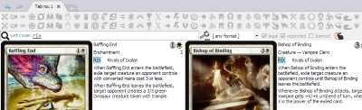
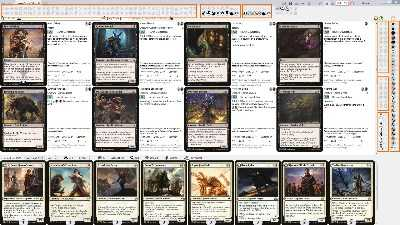
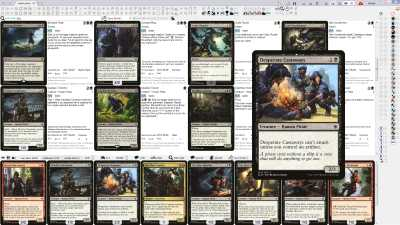

Overview
Overview
Mtgdb.Gui is a Magic the Gathering deck builder application with collection tracking and card prices.
It's free, open source and requires Windows operating system to run.
Search features are easy to use and powerful. Search can be limited to user's own collection. Lookup for similar alternatives to a given card is a matter of 1 click.
Mtgdb.Gui supports several ways to input decks or collection, the fastest are drag-n-drop and copy / paste from another application or website.
Decks can be saved in formats compatible with other MTG-related applications such as Magic the Gathering Online, Magic the Gathering Arena, Forge or XMage.
Diagrams like mana curve provide high-level perspective on a given deck or collection. You can build custom diagrams conceptually the same way as pivot table or pivot diagram in Excel.
Feature list
| Feature | Illustration |
|---|---|
| Database contains all MTG sets up to Throne of Eldraine |  |
| Built-in update of images, card properties and the program itself |

|
| Import collection from Magic The Gathering Online. You can also load and save decks in MTGO-compatible format. | details |
| Drag-n-drop and copy-paste deck to instantly import deck from websites and external applications | details |
| Deck editor | details |
| Collection editor | details |
|
Sample hand, draw and mulligan simulation |

|
| Supported deck formats |
Cockatrice
supports the deck format used by Magarena
Patched by me Riiak's DotP 2014 Deck Builder supports Forge
deck format
|
| Filters | |
|
One-click filter buttons
let you instantly filter
cards by common properties such
as abilities ( |
 |
|
Textual search bar with Lucene syntax. Supports syntax highlighting and intellisense. Search for similar cards shows you cards with similar text and / or generated mana. |

|
|
Search bar in deck list lets you find
decks by their properties e.g.
You can also fliter to cards from to the decks you've found. |

|
| Filter by legality |

|
| Filter by cards in your collection |

|
| Filter by cards in your deck | |
| Choose between AND / OR operators to combine filters | |
|
Show or hide card duplicates in search result. You may want to see all variants of a card to put into your deck a specific version of a beautiful land |

|
|
Sort by most fields, sort by multiple fields |

|
|
Diagrams |

|
|
Zoom |
 |
| Showing card back for flipped cards or meld pair / melded card for meld cards | details |
|
Undo / redo changes in deck, filters and so on. Works even after closing the program and starting it again. |

|
| Translations to all languages supported by Gatherer. Including russian, spanish, portugal and etc. | |
| Printing proxies on A4 paper |

|
| Tooltips on most user interface elements |
|
| Highlighting matched text in search result |

|
| Customizable color scheme |

|
| Using card images you already have with Mtgdb.Gui | details |
| Showing the last card removed from deck in search result even if it doesn't matches filter | The people who used Magic Duel's online deck builder will understand me. It is such an annoying thing when you have a filter, then you remove a card, and you cannot quickly undo as the card disappears from search result. |
{kind=link}
{kind=link}
{kind=link}
{kind=link}